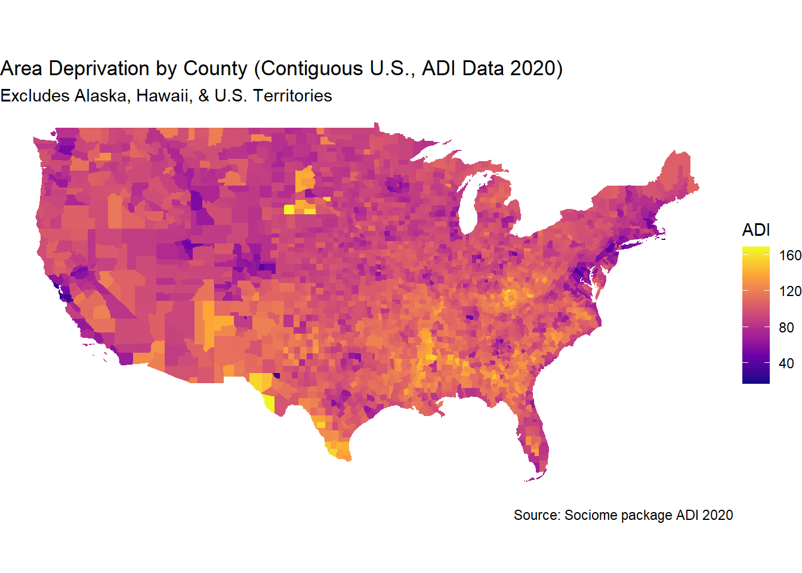

Analysis of Area Deprivation Disparities Using Cohen’s D
Author
Barboza-Salerno
Published
January 26, 2026
Introduction
This analysis examines the Area Deprivation Index (ADI) across U.S. counties. The goal is to assess disparities between areas of high- and low-deprivation (by county) and quantify the effect size using Cohen’s d.
The ADI provides a measure of socioeconomic disadvantage, with higher values indicating greater deprivation. We also map ADI values across counties and exclude non-contiguous U.S. states and territories.
Data Collection & Preparation
# Install and load required packages# install.packages("sociome")# install.packages("ggplot2")# install.packages("dplyr")# install.packages("sf")# install.packages("tigris")# install.packages("effectsize")library(sociome) # For ADI datalibrary(ggplot2) # For visualizationlibrary(dplyr) # For data manipulation
Attaching package: 'dplyr'
The following objects are masked from 'package:stats':
filter, lag
The following objects are masked from 'package:base':
intersect, setdiff, setequal, union
library(sf) # For mapping spatial data
Linking to GEOS 3.11.2, GDAL 3.7.2, PROJ 9.3.0; sf_use_s2() is TRUE
library(tigris) # For county boundaries
To enable caching of data, set `options(tigris_use_cache = TRUE)`
in your R script or .Rprofile.
library(effectsize) # For Cohen's d calculation
Warning: package 'effectsize' was built under R version 4.3.3
We first retrieve the ADI data for 2020 at the county level.
# --- Step 1: Get ADI Data by County ---adi_data <-get_adi(year =2020, geography ="county")# Extract GEOID, county name, and ADIadi_data <- adi_data %>% dplyr::select(GEOID, NAME, ADI)
Excluding Non-Contiguous U.S. States and Territories
To focus on the contiguous U.S., we exclude: - Alaska (02) & Hawaii (15) - U.S. territories: Puerto Rico, Guam, American Samoa, Northern Mariana Islands, U.S. Virgin Islands.
# List of FIPS codes for non-contiguous states/territoriesnon_contiguous_fips <-c("02", "15", "60", "66", "69", "72", "78") # Load county boundaries and exclude non-contiguous areascounties <-counties(cb =TRUE, resolution ="20m", year =2020) %>%filter(!STATEFP %in% non_contiguous_fips)
# Merge ADI data with county geometriesadi_map_data <- counties %>%left_join(adi_data, by =c("GEOID"="GEOID"))
Mapping ADI by County
The following map visualizes area deprivation across the contiguous U.S.. Darker areas represent higher deprivation levels.
You should play around with ggplot to get used to its functionality.
library(ggplot2)ggplot(adi_map_data) +geom_sf(aes(fill = ADI), color =NA) +scale_fill_viridis_c(option ="plasma", name ="ADI") +labs(title ="Area Deprivation by County (Contiguous U.S., ADI Data 2020)",subtitle ="Excludes Alaska, Hawaii, & U.S. Territories",caption ="Source: Sociome package ADI 2020" ) +theme_void()

ADI Disparities & Effect Size (Cohen’s d)
We divide counties into low-deprivation (least disadvantaged, bottom 25%) and high-deprivation (most disadvantaged, top 25%) groups. The income differences between these groups are quantified using Cohen’s d, a measure of standardized effect size.
Cohen’s d tells us how large the difference in ADI between low- and high-deprivation counties:
( d = 0.2 ) → Small effect
( d = 0.5 ) → Medium effect
( d = 0.8+ ) → Large effect
If the result is negative, it means that high-deprivation counties have significantly higher ADI scores than low-deprivation counties. The absolute value of d still represents the effect size.
Key Findings
🔹 A large Cohen’s d suggests significant deprivation disparities between counties with low and high deprivation.
🔹 This reinforces the need for economic policies addressing regional deprivation.
🔹 Mapping ADI allows for geographically targeted interventions to reduce socioeconomic inequalities.
Conclusion
The effect size tells us that the ADI in low-deprivation counties is 3.39 standard deviations higher than in high-deprivation counties. Since Cohen’s d is standardized, this means the deprivation difference is very large in relative terms. This analysis confirms that county-level deprivation is strongly associated with huge disparities in ADI, with high-deprivation counties having more economic inequaltity, low educational attainment, and less financial strength. Future research could associate some outcome across levels of ADI.